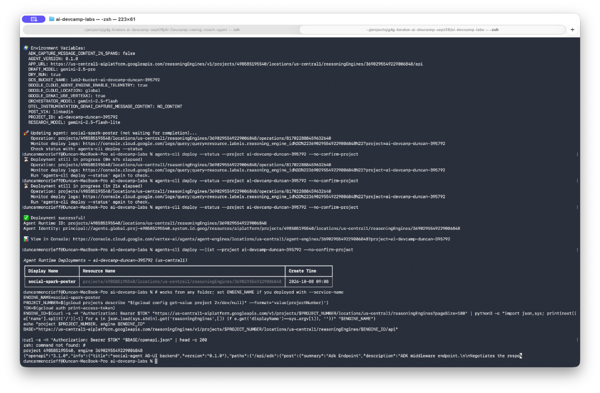
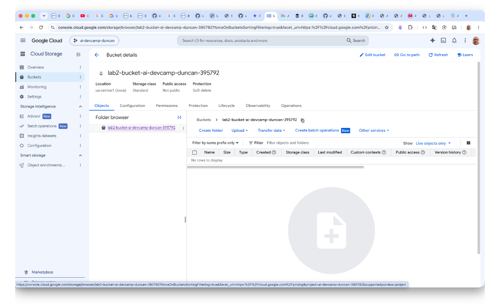

Prerequisites & GCP Foundation
Deploying to managed Agent Runtime touches more Google Cloud APIs than local execution. We run ./gcp-setup.sh to enable Cloud Resource Manager (preventing cryptic gRPC failures), grant roles/aiplatform.user, create dedicated service accounts (social-spark-frontend, social-spark-uploader), configure GCS bucket storage, and store the Buffer API key in Secret Manager.
# Run the idempotent GCP environment initialization script
./gcp-setup.sh
# Verify project configuration and active ADC
gcloud config get-value project
gcloud auth application-default print-access-token > /dev/null
./gcp-setup.sh enabling Vertex AI, Cloud Resource Manager, creating GCS bucket lab2-bucket-ai-devcamp-duncan-395792, and establishing IAM service accounts. Click to expand.

lab2-bucket-ai-devcamp-duncan-395792 in region us-central1 (Iowa) with standard storage class, established for durable asset and image hosting. Click to expand.
Requirement: The script prints Done. with no errors, and gcloud services list --enabled | grep cloudresourcemanager returns a line. That last API is the one that fails most confusingly if it's missing.
Fulfillment: Verified in Figures 1.1 & 1.2. ./gcp-setup.sh completed with exit code 0, enabling cloudresourcemanager.googleapis.com, creating Cloud Storage bucket lab2-bucket-ai-devcamp-duncan-395792 in us-central1, and creating service accounts without JSON key files.